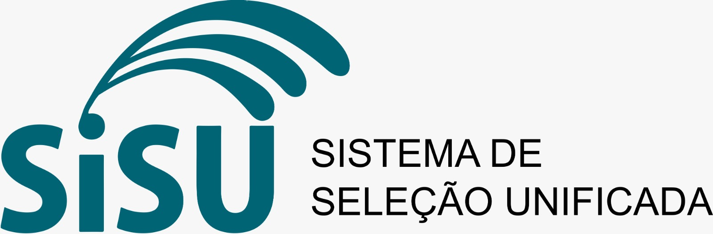

Sistema de Seleção Unificada (Sisu)

O que é o Sisu?
O Sistema de Seleção Unificada (Sisu) reúne em um sistema eletrônico gerido pelo MEC as vagas ofertadas por instituições públicas de ensino superior de todo o Brasil, sendo a grande maioria delas ofertada por instituições federais (universidades e institutos). O sistema executa a seleção dos estudantes com base na nota do Exame Nacional do Ensino Médio (Enem). Até o limite da oferta das vagas, por curso e modalidade de concorrência, de acordo com as escolhas dos candidatos inscritos, eles são selecionados por ordem de maior classificação, em cada uma das duas edições anuais do Sisu.
A inscrição ao Sisu é gratuita e feita, exclusivamente, pela internet. O acesso ao sistema de inscrição do Sisu é realizado com as informações de login e senha para acesso aos serviços digitais do governo federal, mediante uma conta no gov.br. Se você ainda não possui cadastro na página gov.br clique aqui para criar sua conta e se inscrever no Sisu, usando login e senha do cadastro do gov.br.
Como Funciona?
- O candidato se inscreve pela internet.
- Escolhe até duas opções de curso.
- Durante o período de inscrição, pode alterar as escolhas quantas vezes quiser.
- A seleção é feita com base na nota do Enem e nas notas de corte diárias.
- Mais detalhes no tutorial: COMO SE INSCREVER?
Requisitos
- Ter feito o Enem mais recente.
- Não ter zerado a redação.
Estratégias
Fique de olho nas notas de corte e ajuste suas escolhas conforme o andamento do processo.
Cursos mais procurados no Sisu 2024 (Notas de Corte: Mínima – Média – Máxima)
| Curso | Mínima | Média | Máxima |
|---|---|---|---|
| Medicina | 775,39 | 819,41 | 935,06 |
| Direito | 728,59 | 766,48 | 792,66 |
| Enfermagem | 679,17 | 737,55 | 765,70 |
| Psicologia | 726,11 | 765,24 | 761,20 |
| Nutrição | 682,54 | 753,14 | 753,14 |
| Ciências da Computação | 733,77 | 733,77 | 733,77 |
| Administração | 658,33 | 729,15 | 729,15 |
| Pedagogia | 591,34 | 722,44 | 722,44 |
| Arquitetura e Urbanismo | 698,98 | 753,32 | 754,10 |
Dúvidas Frequentes
Quais universidades utilizam o Sisu para seleção?
As instituições federais de ensino superior participantes do Sisu devem reservar no mínimo 50% de suas vagas para estudantes de escolas públicas, de acordo com a Lei nº 12.711/2012 (Lei de Cotas), atualizada pela Lei nº 13.409/2016. Além disso, algumas universidades oferecem vagas adicionais por meio de políticas afirmativas próprias ou bônus na nota do Enem. Durante a inscrição, o candidato deve escolher a modalidade de concorrência adequada ao seu perfil: ampla concorrência, cotas ou ações afirmativas da instituição.
Como funciona o processo de inscrição no Sisu?
A inscrição é gratuita e feita exclusivamente pelo site oficial do Sisu. O candidato pode escolher até duas opções de curso e alterar suas escolhas durante o período de inscrição. A seleção é baseada na nota do Enem.
O que são as notas de corte no Sisu?
São as menores notas necessárias para estar entre os candidatos selecionados para cada curso e modalidade de concorrência. As notas de corte são atualizadas diariamente durante o período de inscrição, com base nas notas dos inscritos.
Posso me inscrever em universidades de outros estados?
Sim. O Sisu permite que o candidato escolha cursos em instituições de qualquer estado do Brasil, sem restrição geográfica.
Quem pode participar do Sisu?
Todos os candidatos que participaram da última edição do Enem, não zeraram a redação e obtiveram nota válida podem se inscrever no Sisu.
Posso participar do Sisu e do Prouni ao mesmo tempo?
Sim. É possível se inscrever nos dois programas simultaneamente. No entanto, se for aprovado nos dois, o candidato deverá optar por apenas uma vaga no momento da matrícula.
Como saberei se fui selecionado?
O resultado da chamada regular será divulgado no site oficial do Sisu. Os candidatos aprovados devem realizar a matrícula dentro do prazo estabelecido pela instituição. Os demais podem manifestar interesse na lista de espera.
O que é a lista de espera do Sisu?
É uma segunda chance para os candidatos não aprovados na chamada regular. Ao se inscrever na lista, o estudante poderá ser convocado pelas instituições conforme surgirem vagas remanescentes.
Datas Importantes
- ENEM inscrições até 12/07
- Isenção ENEM até 24/05
- SISU – inscrições 22 a 25/07
- ProUni – inscrições 29/07 a 01/08
- FIES – inscrições 05 a 08/08